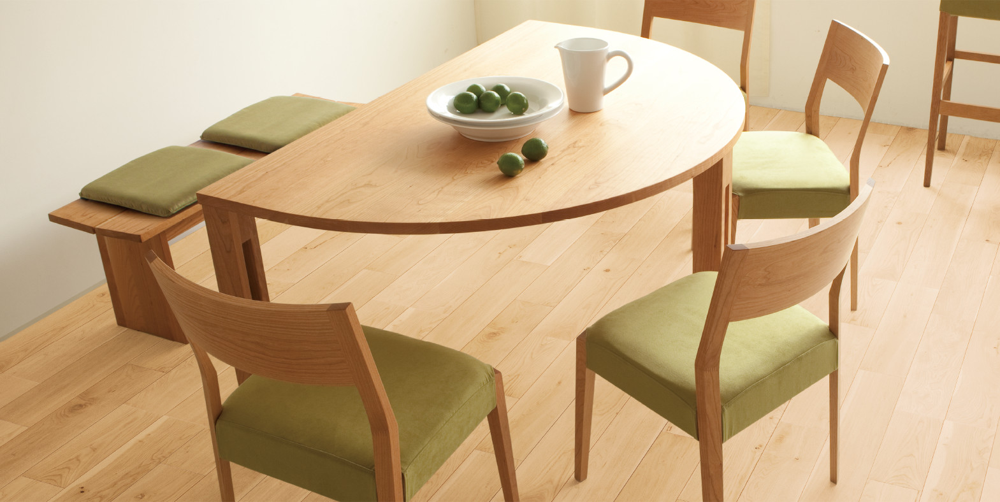

フローリング
消臭、ウィルス、細菌、VOC低減効果をプラスした、安心、安全、健康かつ、天然木ツキ板のフローリングです。カラーバリエーションが豊富なので、あなたのお好みの色が見つかります。
特徴
オイル塗装の風合いを宿したラスティック塗装
温もりのあるオイル塗装の風合いと、水拭きができキズがつきにくいUV塗装がドッキング。ikutaならではの高い技術で開発した、画期的な仕上げです。
安定した寸法精度で床暖房に対応
厳しい試験をクリアした床暖房対応品です。 また、木の本来の性質から割れや節欠けが出る場合もありますが、月日の流れとともにそれが味わいとなり、経年後も寸法精度は変わりにくくなっております。
断面図
※施工はノリ・クギ併用をお願いします。 ※短手・長手オスザネ下に接着剤が入り込むように塗布して下さい。 床暖房を使用しない場合も強く推奨します。 （詳しくは製品に同梱の施工要領書をご参照下さい。）
カラーバリエーション
ブラックチェリー
上品で落ち着いた飴色の色合いと光沢が特徴です。チークやマホガニーと並ぶ銘木として、古くから高級家具材として使われてきました。木目は細かく滑らかで、使い込むほどに深みを増す紅褐色へと変わります。インテリアをラグジュアリーに彩る樹種です。
2Pタイプ
3Pタイプ
ナラ樫
圧倒的な生命力で豊かな森を作るナラはドングリが実る木。重量感があり、耐久性や耐水性に優れているため、フローリングに長く使われてきた材です。力強いあら目の木目は存在感がありますが、様々な雰囲気の部屋に馴染みやすく、肌色の色合いは年月とともにやわらかい黄金色へと変化します。
※ナラ樫は、銘木フロアーシルク（旧銘木フロアー源平）のナラ樫源平のツキ板を使用しています。
節抜け
天死節は時間の経過で抜ける場合があり、抜けた後に下地素材が見えたりします。
また、節の形は様々だったり、できる場所にもバラツキがあります。
2Pタイプ

3Pタイプ
イタヤカエデ
色白で硬い材質に様々な斑模様が織りなす表情は、見るものを楽しませてくれます。楽器や家具によく使われ、中でも美しい杢を持つものは工芸材料として珍重され、万年筆などにも使われることもあります。
※イタヤカエデは、銘木フロアーシルク（旧銘木フロアー源平）のイタヤカエデのツキ板を使用しています。
赤身
木の中心に近い濃い色の部分が赤身です。心材とも呼ばれ辺材に比べて堅いのが特長です。
白太
木の樹皮の直下に近い白い部分が白太です。辺材とも呼ばれ樹液分が多く柔らかいのが特長です。
黒い筋
成長期に鳥や動物に樹皮が傷つけられ、その部分がめくれ上がるなどして、木材の内部に痕跡として残った部分です。
2Pタイプ
3Pタイプ
ウォールナット
重厚さと気品を感じさせる、落ち着いた色合いと美しい木目。クラシカルはもちろん、モダンな空間にもおすすめです。硬く粘りがある一方、軽く扱いやすいため、加工や塗装にも優れ、加工後の狂いが少ないため楽器や銃槍にも使われます。濃い茶色から明るくまろやかな茶色に経年変化します。
2Pタイプ
3Pタイプ
ハードメープル
明るい乳白色のきめ細やかな木肌が特徴です。五大湖周辺に広く分布し、雪の重みに耐えて成長した非常に硬い材で、衝撃や摩擦に強く、ダンスホールのフロアに使われるほど。「木の真珠」と言われる上品な木肌は、どんな空間にも自然に溶け込みます。経年変化で飴色へと変わります。
2Pタイプ
3Pタイプ
商品情報
| メーカー名 | 株式会社イクタ |
|---|---|
| 型番 |
ブラックチェリー 床暖房対応品 2P（ツヤなし） AW-CR2 床暖房対応品 3P（ツヤなし） AW-CR3 ナラ樫 床暖房対応品 2P（ツヤなし） AW-NKR2 床暖房対応品 3P（ツヤなし） AW-NKR3 イタヤカエデ 床暖房対応品 2P（ツヤなし） AW-IKR2 床暖房対応品 3P（ツヤなし） AW-IKR3 ウォールナット 床暖房対応品 2P（ツヤなし） AW-WR2 床暖房対応品 3P（ツヤなし） AW-WR3 ハードメープル 床暖房対応品 2P（ツヤなし） AW-MR2 床暖房対応品 3P（ツヤなし） AW-MR3 |
| メーカーURL | https://ikuta.co.jp/ |